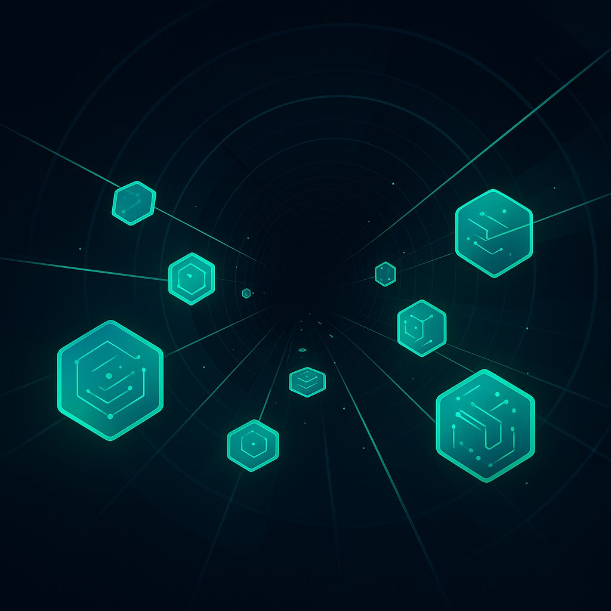

VLESS VPN Protocol: A Deep Dive into Next-Generation Obfuscation
In the ever-evolving landscape of internet censorship and surveillance, the quest for robust and undetectable VPN protocols remains paramount. As governments and internet service providers (ISPs) deploy increasingly sophisticated Deep Packet Inspection (DPI) techniques, traditional VPN solutions often fall short. Enter VLESS, a relatively new contender in the world of obfuscated protocols, designed to circumvent these advanced filtering mechanisms. This article will explore what VLESS is, how it compares to established protocols like VMESS and OpenVPN, delve into the groundbreaking "Reality" feature, explain its DPI bypassing capabilities, and briefly touch upon Shadowsocks 2022 as a viable alternative.
What is VLESS?
VLESS (pronounced "vee-less") is an obfuscated proxy protocol developed for the Xray project (a fork of V2Ray). Unlike many other protocols that rely on encryption and obfuscation layers built on top of existing internet protocols, VLESS takes a minimalist approach. Its core design principle is to be as "stateless" and "transparent" as possible, resembling legitimate HTTPS traffic to an unprecedented degree. This simplicity, paradoxically, makes it incredibly difficult for DPI systems to identify and block.
At its heart, VLESS focuses on direct data transmission without additional obfuscation headers or complex handshakes. It leverages a combination of UUID (Universally Unique Identifier) authentication and optional TLS (Transport Layer Security) encryption. When TLS is enabled, which is almost always the case for effective obfuscation, VLESS traffic blends seamlessly with standard web browsing, making it exceptionally discreet. This makes VLESS a highly attractive option for users in regions with stringent internet controls, where the ability to bypass censorship is crucial for accessing an open internet. Services like NoBorder VPN actively integrate such advanced protocols to ensure their users maintain unrestricted access.
VLESS vs. VMESS vs. OpenVPN: A Comparison
To understand VLESS's significance, it's helpful to compare it with two prominent protocols: VMESS and OpenVPN.
- OpenVPN: For years, OpenVPN has been the gold standard for secure VPN connections. It's open-source, highly configurable, and provides strong encryption. However, OpenVPN's identifiable handshake and characteristic packet patterns make it relatively easy for advanced DPI systems to detect and block. While it offers excellent security, its obfuscation capabilities are often insufficient against state-level censorship.
- VMESS: VMESS, also developed for V2Ray, was a significant step forward in obfuscation. It uses a more complex authentication and obfuscation mechanism than OpenVPN, making it harder to detect. VMESS often relies on TCP or WebSocket transport with TLS, further enhancing its stealth. However, VMESS still has a distinct protocol signature that, with enough analysis, can be identified by sophisticated DPI.
- VLESS: VLESS takes a different approach. Its stateless nature and lack of complex protocol-specific headers make it inherently more difficult to distinguish from regular TLS traffic. When combined with the "Reality" feature (discussed next), VLESS achieves an unparalleled level of stealth, often outperforming even VMESS in highly censored environments.
Here's a comparison table summarizing the key differences:
| Feature | OpenVPN | VMESS | VLESS |
|---|---|---|---|
| Obfuscation Level | Low (detectable patterns) | Medium (complex, but can be identified) | High (minimalistic, resembles real TLS) |
| DPI Resistance | Low to Medium | Medium to High | Very High |
| Performance Overhead | Moderate | Moderate | Low (due to statelessness) |
| Complexity | Moderate (highly configurable) | Moderate to High | Low (protocol-wise, but setup can be involved) |
| Primary Transport | UDP/TCP | TCP/WebSocket + TLS | TCP + TLS (often with Reality) |
| Detectability | High | Medium | Very Low |
VLESS Reality Explained: TLS Fingerprint Mimicry
The "Reality" feature is arguably the most groundbreaking aspect of VLESS and what truly sets it apart. Reality is not a separate protocol but an advanced obfuscation layer built into VLESS that leverages TLS fingerprinting. Instead of simply encrypting traffic with TLS, Reality takes it a step further by *mimicking* the TLS fingerprints of popular, legitimate websites.
Here's how it works:
- Client Hello Obfuscation: When a client initiates a TLS connection, it sends a "Client Hello" message containing various parameters like supported cipher suites, TLS version, and extensions. This unique combination forms a TLS fingerprint.
- Target Website Mimicry: With Reality, the VLESS server is configured to impersonate a specific, popular website (e.g., Google, Microsoft, Cloudflare). When a VLESS client connects, its Client Hello message is crafted to exactly match the TLS fingerprint of that chosen legitimate website.
- Pre-Shared Key (PSK) or Short-Term Key (STK): Reality uses a pre-shared key (PSK) or a short-term key (STK) for initial authentication, embedded within the Client Hello message in a way that appears to be part of the legitimate TLS handshake. This allows the VLESS server to identify the legitimate VLESS client without revealing any protocol-specific identifiers.
- Traffic Redirection: If the Client Hello matches the expected legitimate fingerprint and contains the correct authentication key, the VLESS server then proxies the traffic to the actual VLESS backend. If it doesn't match, the server can simply redirect the traffic to the actual legitimate website it's mimicking, making it appear as a normal web server to an unsuspecting DPI system.
This intelligent mimicry makes it incredibly difficult for DPI systems to differentiate VLESS Reality traffic from genuine traffic to a major website. The DPI sees a perfectly formed TLS handshake for Google.com, for example, and therefore allows it to pass. This technique is exceptionally effective because it doesn't just hide the traffic; it makes it look like something perfectly normal and expected.
Why VLESS Bypasses DPI
VLESS's ability to bypass DPI stems from several key design choices, particularly when paired with Reality:
- Statelessness: Unlike protocols that maintain session states or complex handshakes, VLESS is designed for minimal overhead. This reduces the amount of unique metadata available for DPI to analyze.
- Lack of Protocol Signatures: VLESS, especially without Reality, is already designed to be generic. When combined with TLS, it aims to look like any other encrypted web traffic.
- TLS Fingerprint Mimicry (Reality): This is the game-changer. DPI systems heavily rely on identifying unique TLS fingerprints, especially for known VPN protocols. By making VLESS traffic indistinguishable from legitimate, high-volume websites, Reality effectively blinds DPI. The DPI sees a known, trusted fingerprint (e.g., for Google) and assumes it's legitimate traffic, allowing it to pass through.
- Passive Evasion: Instead of actively trying to scramble or obfuscate data in ways that might still create new, detectable patterns, VLESS Reality passively blends in. It doesn't scream "VPN"; it whispers "normal website."
- Decoy Domains: The use of decoy domains (the legitimate website being mimicked) adds another layer of plausible deniability. If an ISP tries to investigate, they'll see traffic going to a major, legitimate website, making it harder to justify blocking.
For users relying on VPNs in highly restrictive environments, the DPI bypassing capabilities of VLESS Reality are a significant advantage. This level of stealth is why services like NoBorder VPN are constantly evaluating and integrating such cutting-edge protocols to offer their users the best possible protection against censorship.
Shadowsocks 2022 as an Alternative
While VLESS is a powerful solution, it's not the only option for bypassing censorship. Shadowsocks, another open-source proxy project, has long been a popular choice. The "Shadowsocks 2022" protocol refers to the latest iterations and best practices for deploying Shadowsocks, often involving plugins and specific configurations to enhance its obfuscation.
Shadowsocks operates on the principle of obfuscating traffic to resemble ordinary HTTPS traffic. It uses various encryption methods and often relies on plugins (like simple-obfs, v2ray-plugin, or kcptun) to add additional layers of obfuscation and transport mechanisms. While highly effective against many DPI systems, Shadowsocks generally doesn't achieve the same level of TLS fingerprint mimicry as VLESS Reality. It still relies on its own protocol design, albeit a very stealthy one.
However, Shadowsocks remains an excellent alternative due to its:
- Simplicity: Often easier to set up than VLESS for basic use cases.
- Performance: Known for good performance and low overhead.
- Widespread Adoption: A large community and extensive documentation are available.
- Flexibility: The plugin architecture allows for adaptation to new censorship methods.
For users seeking robust censorship circumvention, both VLESS and Shadowsocks (especially with modern configurations) are strong contenders. The choice often depends on the specific censorship environment and the user's technical comfort level. NoBorder VPN, for instance, might offer both VLESS and advanced Shadowsocks configurations to cater to a wider range of user needs and censorship scenarios.
Technical Setup Overview
Setting up VLESS, especially with Reality, requires a bit more technical expertise than a typical commercial VPN client. Here's a simplified overview:
- Server Setup:
- VPS (Virtual Private Server): You'll need a VPS located outside the censored region.
- Xray Installation: Install the Xray core (which implements VLESS and Reality) on your VPS.
- Configuration File: Create a detailed Xray configuration file. This is where you define:
- The VLESS inbound listener.
- A unique UUID for authentication.
- The TLS settings, including the certificate.
- Crucially, for Reality:
- A target legitimate domain (e.g.,
www.google.com) whose TLS fingerprint you want to mimic. - A private key and a short-term key (STK) for authentication.
- A "decoy" domain (the actual website the server will redirect to if a non-VLESS client connects).
- A target legitimate domain (e.g.,
- Domain Name (Optional but Recommended): For maximum stealth, use a legitimate domain name pointing to your VPS. This allows you to obtain a valid TLS certificate for your server.
- Client Setup:
- Xray Client Application: Install a compatible Xray client on your device (Windows, macOS, Android, iOS).
- Client Configuration: Configure the client with the server's IP address or domain, the VLESS port, your UUID, and the same Reality settings (target domain, STK) used on the server.
- System Proxy: Configure your system or applications to use the Xray client as a proxy.
The complexity primarily lies in correctly configuring the Xray server and client, especially the Reality parameters. Misconfigurations can lead to connection failures or, worse, make your traffic detectable. However, detailed guides and community support are readily available for those willing to undertake the setup. For users who prefer a simpler approach, reputable VPN providers often offer VLESS as an integrated protocol, handling the complex backend configuration for them.
Practical Recommendation
For individuals residing in or traveling to regions with heavy internet censorship, VLESS with Reality represents one of the most effective tools currently available for bypassing DPI and accessing an open internet. Its ability to mimic legitimate TLS traffic makes it exceptionally difficult to detect and block, offering a level of stealth that surpasses many traditional VPN protocols. While the technical setup can be involved for self-hosting, the benefits in terms of censorship circumvention are substantial.
However, for the average user, setting up a personal VLESS Reality server might be too complex. In such cases, opting for a reputable VPN service that explicitly offers VLESS (or advanced Shadowsocks configurations) as a protocol option is the most practical recommendation. Services like NoBorder VPN, which prioritize advanced obfuscation and provide easy-to-use clients, can abstract away the technical complexities, allowing users to benefit from cutting-edge protocols without the hassle of manual configuration. Always ensure your chosen provider has a strong commitment to privacy and transparency, as the effectiveness of any circumvention tool is ultimately tied to the trustworthiness of its operator.